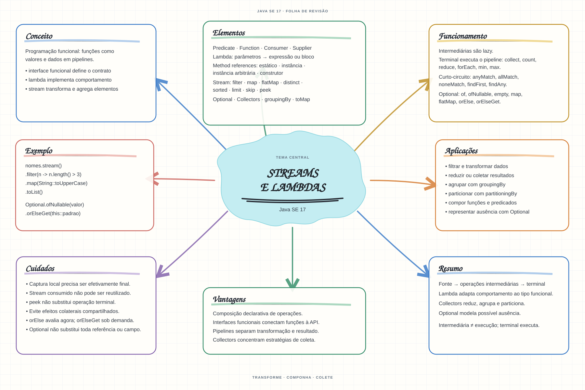

Escolha um assunto para abrir as notas de estudo. Os mapas mentais complementam o conteúdo como material de revisão.


Abrir mapa mental do capítuloMARCO DE CONCLUSÃO
Filtre e transforme uma coleção com stream e produza um resultado sem alterar a coleção original.
Como este capítulo se relaciona com cada exame
1Z0-808 · Java 8
Lambdas e streams surgem no Java 8; confirme se pertencem ao exame-alvo.
1Z0-829 · Java 17
Base de estudo deste portal; confirme o mapeamento com o blueprint vigente.
1Z0-830 · Java 21
Conceitos úteis; valide as APIs e o escopo atualizado de Java 21.
Orientação editorial sobre reaproveitamento do material; não representa objetivos oficiais nem garante cobertura do exame. Consulte o comparativo e as fontes da Oracle.